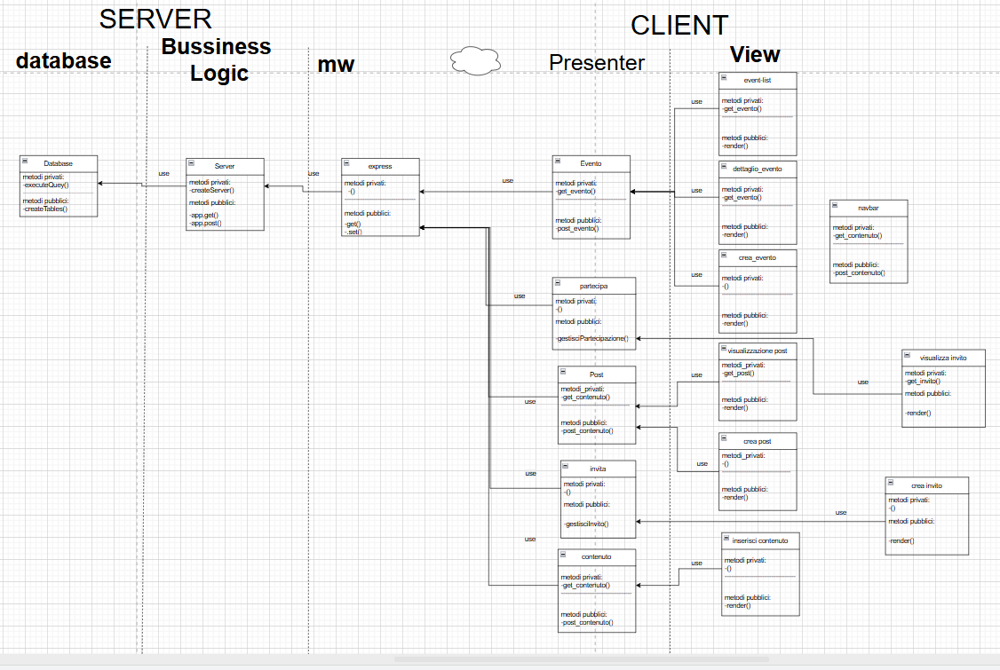
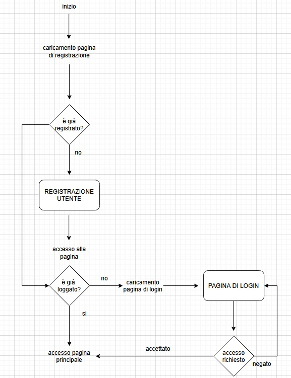
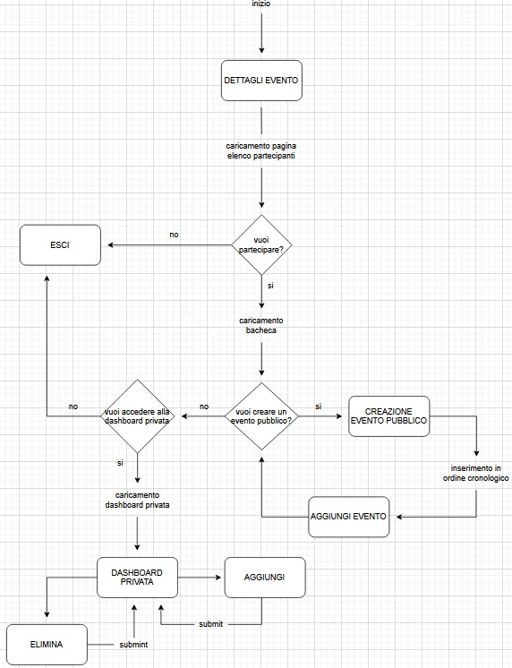
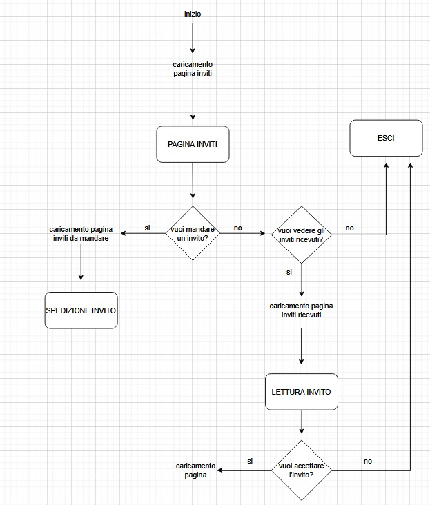
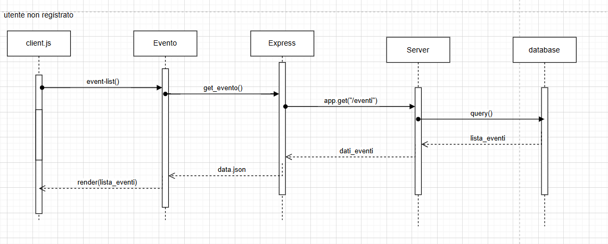
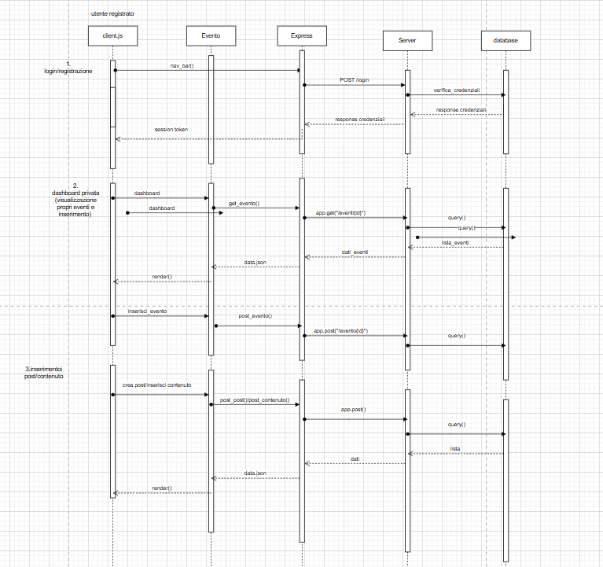
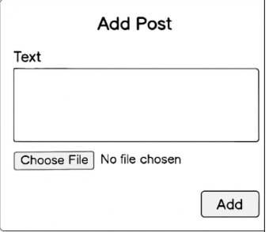

Documentazione
Gestione Eventi
L’applicazione è un social network dedicato agli studenti per la condivisione di eventi. Gli utenti possono registrarsi e accedere tramite login. Tutti gli eventi e i relativi post (testi, immagini, video) sono pubblici e visualizzati in una bacheca in ordine cronologico. Ogni evento mostra la sua data, i contenuti condivisi e l’elenco dei partecipanti. Gli utenti autenticati possono partecipare o annullare la partecipazione a un evento. All’interno della dashboard privata, ogni utente può gestire i propri eventi: aggiungerli o eliminarli, gestire i post associati e invitare altri utenti. Inoltre, è presente una sezione per la gestione degli inviti ricevuti. L’interfaccia è progettata con un approccio mobile first, per garantire una fruizione ottimale da dispositivi mobili..
- Classe/Anno: 5BINF - 24/25
- Author: Costa, Fassina, Mendoza, Scalone
- Creato: 4 aprile 2025
- Ultima modifica: 29 aprile 2025
Architettura informazione
Ogni utente, identificato da un account con nome, email e password, può creare eventi pubblici, ai quali altri utenti possono partecipare o essere invitati. Gli eventi includono una descrizione, una data e possono contenere post multimediali (testi, immagini, video), visibili pubblicamente in una bacheca ordinata cronologicamente. Gli utenti possono scrivere post legati agli eventi, partecipare o ritirarsi, e ricevere inviti con stato (accettato, rifiutato, in attesa) e data. Ogni post è associato a un solo evento ed è scritto da un singolo utente. Nella dashboard personale, l’utente può gestire gli eventi creati, i relativi post e gli inviti inviati o ricevuti. Lo schema E/R riflette queste funzionalità modellando le entità principali (utente, evento, post) e le relazioni tra loro (creazione, partecipazione, invito, scrittura, contenimento), supportando una fruizione ottimizzata per dispositivi mobili grazie all’approccio mobile-first dell’interfaccia.
UML
Diagramma di Casi d'uso
Diagrammi di oggetti
Diagrammi di Stato
diagramma per login e regisrazione
diagramma per gestire il flusso di creazione evento ed inserimento contenuti
diagramma per l'utente che visualizza i metodi di altri
Diagrammi di Sequenza
Utente non registrato
Utente registrato
Contenuti del progetto
| Componente | Descrizione |
|---|---|
| Login/Registrazione | Sistema di autenticazione per utenti, con possibilità di registrazione e login. |
| Dashboard Utente | Interfaccia personalizzata che mostra gli eventi creati, quelli a cui si partecipa e gli inviti ricevuti. |
| Gestione Eventi | Funzionalità per creare, modificare e cancellare eventi, con dettagli come data, luogo e descrizione. |
| Post e Commenti | Sezione per la pubblicazione di post e commenti relativi agli eventi, favorendo l'interazione tra gli utenti. |
| Inviti | Sistema per invitare altri utenti agli eventi, con gestione delle risposte (accettazione o rifiuto). |
| Partecipazione | Funzionalità che consente agli utenti di confermare la propria partecipazione agli eventi. |
| Visualizzazione Eventi | Pagina pubblica che mostra tutti gli eventi disponibili, accessibile anche agli utenti non registrati. |
| Responsive Design | Interfaccia ottimizzata per dispositivi desktop e mobile, garantendo un'esperienza utente coerente su diverse piattaforme. |
Wireframes
Il progetto è stato sviluppato seguendo i principi del responsive design. È pienamente fruibile sia da desktop che da mobile, garantendo un'esperienza utente ottimale su tutti i dispositivi(sito responsivo).
Bacheca eventi
Pagina di dettaglio senza login
Pagina di dettaglio dopo il login
Aggiunta di un post
Dashboard privata
Aggiunta evento(modale)
Gestione inviti
Inviti ricevuti